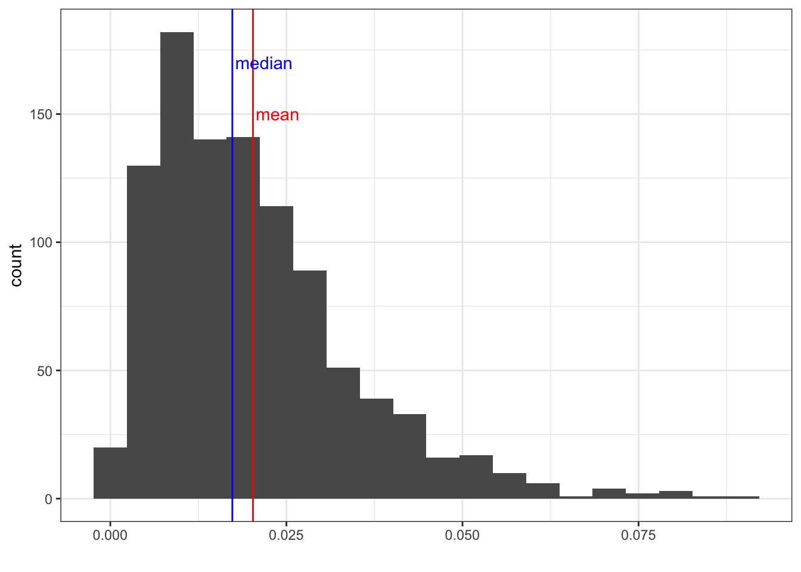

Chapter 4 Descriptive Statistics
Central Tendency, Outliers, and Dispersion
Learning Outcomes
- Revisit what descriptive statistics are and their importance in understanding your data
- Learn / review measures of the central tendency and dispersion and how to conduct them
- Learn how to identify outliers and skewness
Today’s Learning Tools:
Total number of activities: 11
Data:
- Law Enforcement Management and Administrative Statistics (LEMAS)-Body-Worn Camera Supplement (BWCS) Survey
- 2004 Survey of Inmates in State and Federal Correctional Facilities (SISFCF)
Packages:
dplyrggplot2heremodeestmomentsqualvarskimr
Functions introduced (and packages to which they belong)
attach(): Commonly used to attach a data frame object for easier access (base R)diff(): Computes differences between values in a numeric vector (base R)dim(): Check the dimensions of anRobject (base R)DM(): Computes deviation from the mode (qualvar)group_by(): Group observations by variable(s) for performing operations (dplyr)IQR(): Compute interquartile range (base R)is.na(): ReturnsTRUEwhen values are missing,FALSEif not (base R)mean(): Compute arithmetic mean (base R)max(): Returns the maximum value (base R)min(): Returns the minimum value (base R)mlv(): Compute the mode (modeest)quantile(): Compute quantiles as per specified probabilities (base R)sd(): Computes standard deviation of a numeric vector (base R)skewness(): Calculate degree of skewness in a numeric vector (modeest)skim(): Provide summary statistics specific to object class (skimr)str(): Returns internal structure of anRobject (base R)summarize(): Create new summary variable(s), e.g., counts, mean (dplyr)summary(): Produce summary of model results (base R)table(): Generates a frequency table (base R)var(): Computes variance (base R)
4.1 Revisiting Descriptive Statistics
The field of statistics is divided into two main branches: descriptive and inferential. Much of what you will cover today on descriptive statistics will be a review from last semester, but learning to conduct them in R will be a new learning experience.
So, what are descriptive statistics? If general statistics is concerned with the study of how best to collect, analyse, and make conclusions about data, then this specific branch, descriptive statistics, is concerned with the sample distribution and the population distribution from which the sample is drawn. Basically, descriptive statistics are ways of describing your data.
Similar to last week’s lesson on data visualization, describing your data is important because it helps you identify patterns and anomalies. In addition, it gives others a succinct understanding of your data, so it facilitates good communication. We revisit and learn another three substantive topics today: the central tendency, outliers, and dispersion.
4.1.1 Activity 1: Our preparation routine
We start by doing the usual routine, but with new data on police body-worn cameras:
Open up your existing
RprojectInstall and load the required packages (listed at the top of this lesson) using the function
install.packages()For now, open only the 2016 LEMAS-BWCS dataset (37302-0001-Data.rda). These data are from the Inter-university Consortium for Political and Social Research (ICPSR) website and you can find them by using the dataset name, which refers to the ICPSR study number. The data are stored in an
Rdata file format (.rda).We will need to use the
load()function to import the data frame into our environment, specifying the working directory usinghere()like we have in Lesson 2.1.
library(here)## here() starts at /Users/reka/Dropbox (The University of Manchester)/modelling2021/Modelling-Crime-Data-2021load(here("Datasets", "37302-0001-Data.rda"))- Name the data frame
bwcsby using the<-assignment operator. Another way of looking at it is you are putting the dataset into a ‘box’ that you will call ‘bwcs’.
bwcs <- da37302.0001- Use the function
View(bwcs)to ensure the file is loaded and to get to know your data. You can also use the functiondim(bwcs)to see the number of observations and variables.
4.2 Today’s 3
Two primary ways of describing your data have to do with the central tendency and their dispersion. We also learn about outliers.
4.2.1 Central Tendency
Central tendency refers to a descriptive summary of the centre of the data’s distribution; it takes the form of a single number that is meant to represent the middle or average of the data. The mean, median, and mode are common statistics of the central tendency.
The mean is the average and it is useful when we want to summarise a variable quickly. Its disadvantage is that it is sensitive to extreme values, so the mean can be distorted easily.
To address this sensitivity, the median is a better measure because it is a robust estimate, so is not easily swayed by extreme values. It is the middle of the distribution.
The mode helps give an idea of what is the most typical value in the distribution, which is the most frequently occurring case in the data. While mean and median apply to numeric variables, the mode is most useful when we are talking about categorical variables. You might want to know the most frequently appearing category. This is what the mode tells you!
4.2.1.1 Activity 2: Recap of how to obtain the mean, median, and mode
In Lesson 1, you were introduced to the functions mean and median. There is no direct function in base R to calculate the mode, but you will one way to do so after this activity. Please find only the mean and median for the following six numbers:
# 345, 100, 250, 100, 101, 300 Type your answers in the group google doc.
From today’s data, we are interested in exploring the adoption of body-worn cameras (BWCs) and their usage in a sample of agencies. The variables that will help us explore this is Q_10A because it measures whether the agency adopted BWCs and Q_12 because it measures the number of cameras that agencies reported using.
So let’s say we want to learn about these variables. The first step to choosing the appropriate analysis for our variable is establishing: what is it’s level of measurement? I did say, we shall keep coming back to these building blocks. So take a moment and reflect: what is the level of measurement you expect for Q_10A - whether or not the agency has adopted body worn cameras? What about for Q_12 - the number of cameras the agency uses?
Have a think and write your answers in the google doc!

So now we know what we think the level of measurement should be, but what sort of object does R think that this variable is? Well, remember we can use the class() function for R to tell us this.
Let’s start with Q_10A - whether or not the agency has adopted body worn cameras. Hopefully you thought this to be a categorical variable. Let’s see what R says:
class(bwcs$Q_10A) ## [1] "factor"We see this is a factor variable. So we can think to also use our trusty attributes() function, to see what levels it has :
attributes(bwcs$Q_10A)## $levels
## [1] "(1) Agency has acquired in any form (including testing)"
## [2] "(2) Agency has not acquired"
##
## $class
## [1] "factor"We can see it has 2 levels, “(1) Agency has acquired in any form (including testing)” and “(2) Agency has not acquired” . Which one appears the most frequently in our data set? Well to answer this, we can get the mode using the mlv function from the modeest package. Load the package:
library(modeest)And now use the mlv() function to get the answer:
mlv(bwcs$Q_10A)## [1] (2) Agency has not acquired
## 2 Levels: (1) Agency has acquired in any form (including testing) ...You can see this tells us the answer is “(2) Agency has not acquired”. It also, handily prints out all the levels, so we can see what other values there were.
If you want to double check whether the mlv() function is telling you the truth, create another frequency table, using the table() function.
table(bwcs$Q_10A)##
## (1) Agency has acquired in any form (including testing)
## 1915
## (2) Agency has not acquired
## 2013Indeed there are 2013 cases where the agency had not had any body worn cameras (“(2) Agency has not acquired”) which is more than the 1915 cases where the agency had body worn cameras in any format (“(1) Agency has acquired in any form (including testing)”).
We could also run the mlv() function and save the output to an object, rather than print into the console. Here we save to the object called mode_adopted:
mode_adopted <- mlv(bwcs$Q_10A)
mode_adopted## [1] (2) Agency has not acquired
## 2 Levels: (1) Agency has acquired in any form (including testing) ...The mlv() function (acronym for most likely values) from the modeest package is used to obtain the mode. The modal response of all agencies was ‘No’, meaning that they had not adopted BWCs as of the 2016 survey.
Our exploration into the adoption of BWCs has so far yielded the knowledge that the majority of agencies had not adopted BWCs as of 2016. But how about those that have done so? To what extent do they use BWCs? This is where variable Q_12 comes in handy:
4.2.1.2 Activity 3: The extent of body worn camera use
Use code to obtain the class of the variable Q_12. Type the code you used and what class the variable is in your group google doc. (hint look back at how we did this for Q_10)
After you do so, we do some more investigation of Q_12. First let us get the minimum value:
min(bwcs$Q_12, na.rm=TRUE)## [1] 0What about the maximum:
max(bwcs$Q_12, na.rm=TRUE)## [1] 1200You can see above we use the functions min() and max(), and inside we put the object we want the minimum and maximum of (bwcs$Q_12), but we also add another parameter after a comma where we say na.rm=TRUE.
What the heck is na.rm? When calculating measures of central tendency, you need to tell R that you have missing (NA) cases. Using na.rm = TRUE will exclude cases that have already been defined as missing. If we do not specify this code, it will return NA for agencies that have acquired BWCs because Q_12 has missing data. If you have NA, however, for the row defining agencies that have not acquired BWCs, this is all right because there would be no cases for them.
Now let us find the average number of BWCs used by agencies that have responded ‘Yes’ in Q10_A. We will use two ways to determine the mean: the dplyr way and the usual base R way.
First let’s start with dplyr. Load the package
library(dplyr)##
## Attaching package: 'dplyr'## The following objects are masked from 'package:stats':
##
## filter, lag## The following objects are masked from 'package:base':
##
## intersect, setdiff, setequal, unionNow we will do two things. First we will use the group_by() function in order to group our observations by the values of the Q_10A variable. What are these values? Look above, and you will see, they are “(1) Agency has acquired in any form (including testing)” and “(2) Agency has not acquired”. Then, we use the summarise() function, to tell us some summary statistics (in this case the mean, using the mean() function) for each group.
We did a similar thing last semester - remember we got the mean and median and min and max etc for each value of a particular variable, when we were looking at the relationship between age and the reason someone got arrested. Now we are looking for the values of how many body worn video cameras are in use (Q_12) between whether they are in use or not (Q_10A):
bwcs %>%
group_by(Q_10A) %>%
summarize(mean_deployed = mean(Q_12, na.rm = TRUE))## # A tibble: 2 x 2
## Q_10A mean_deployed
## * <fct> <dbl>
## 1 (1) Agency has acquired in any form (including testing) 31.8
## 2 (2) Agency has not acquired NaNSo we see that in those agencies where there is any cameras used, the average number of cameras is about 32. But in agencies where there is no bodyworn camera at all, the average is NaN! What is this?!?

Well NaN in R stands for Not a Number. This is because, all the values for those who have no cameras for how many cameras they have is NA. Hopefully this makes sense, but if not, ask now!
I did say there are many ways to answer a question in R. We used dplyr above, this is the tidyverse way. But you could also use the base R way. Here we use the mean() function, but get the average for all the groups together:
mean(bwcs$Q_12, na.rm = TRUE)## [1] 31.82024The answers are the same: 31.8 . This is because we know what one group (those who haven’t adopdet bwcs yet) don’t contribute to the average. We use both methods because there may be situations where one is more appropriate than the other (e.g., maybe you want to see means for the individual categories when they are not NaN).
Next, we check out the median, as, remember, the mean is susceptible to outliers. To get the median for each group, we use summarise() again but this time we include the median() rather than the mean() function:
# Use the same format as above, this time using the median() function
# dplyr way
bwcs %>% group_by(Q_10A) %>% summarise(med_deployed = median(Q_12, na.rm = TRUE))## # A tibble: 2 x 2
## Q_10A med_deployed
## * <fct> <dbl>
## 1 (1) Agency has acquired in any form (including testing) 8
## 2 (2) Agency has not acquired NAWhat about the base R way?
# Base R way
median(bwcs$Q_12, na.rm = TRUE)## [1] 8Again, both methods to obtain the median are the same, but the median differs a lot from the mean: it is 8.
What does this mean? Well there must be a few agencies which have a lot of body worn cameras, which may be skewing our mean upwards. When the median and the mean are far away, we have skew.
Sometimes, we want to calculate these at once. This is where the dplyr way is most handy, where we can specify more than one way to summarise our data in the summarise() function, separated by commas. So we create 4 columns in our table:
- mean_deployed, using the
mean()function, - median_deployed, using the
median()function, - mode_deployed, using the
mlv()function, - and total, using the
sum()function.
# Table containing the mean, median, mode, and total number of BWCs deployed
bwcs %>%
group_by(Q_10A) %>%
summarise(mean_deployed = mean(Q_12, na.rm = TRUE),
median_deployed = median(Q_12, na.rm = TRUE),
mode_deployed = mlv(Q_12, method='mfv', na.rm = TRUE),
total = sum(Q_12, na.rm = TRUE))## # A tibble: 2 x 5
## Q_10A mean_deployed median_deployed mode_deployed total
## * <fct> <dbl> <dbl> <dbl> <dbl>
## 1 (1) Agency has acquired in … 31.8 8 1 60363
## 2 (2) Agency has not acquired NaN NA NaN 0Another handy package for descriptive statistics is skimr. The function skim () produces measures of central tendency and measures of dispersion (we will learn more on these in the later section), and number of missing values.
A great feature of this is that it also includes a histogram of the numeric variables specified. If you do not want to specify any variables, skim() will summarise your entire data frame, and this may be good, but it depends on the size of your dataset:
library(skimr)Produce a summary of your Q_12 variable, grouped by Q_10 using skim()
| skim_type | skim_variable | Q_10A | n_missing | complete_rate | numeric.mean | numeric.sd | numeric.p0 | numeric.p25 | numeric.p50 | numeric.p75 | numeric.p100 | numeric.hist |
|---|---|---|---|---|---|---|---|---|---|---|---|---|
| numeric | Q_12 | (1) Agency has acquired in any form (including testing) | 18 | 0.9906005 | 31.82024 | 92.26974 | 0 | 3 | 8 | 20 | 1200 | ▇▁▁▁▁ |
| numeric | Q_12 | (2) Agency has not acquired | 2013 | 0.0000000 | NaN | NA | NA | NA | NA | NA | NA |
bwcs %>%
group_by(Q_10A) %>%
skim(Q_12)4.2.2 Outliers
Recall the main disadvantage of the mean: it is not robust to extreme values, otherwise known as outliers.
What exactly constitutes an outlier? In a general sense, an outlier is any observation that shows an extreme value on one of our variables. There are different approaches to define what is an outlier, here we will rely on using the interquartile range to do so.
One way of determining whether a case is an outlier is if it is 1.5 multiplied by the interquartile range (IQR) above the 3rd quartile (very large measurement eg very many BWCs) or below the 1st quartile (very small measurement eg very few BWCs), or for extreme outliers, above or below by 3 multiplied by IQR. The IQR is another robust estimate and is the 75th percentile observation (the third quartile [Q3]) minus the 25th percentile observation (the first quartile [Q1]) in your distribution:
\[ IQR= Q3 - Q1 \]
In the case of our body worn camera data, we can calculate these measures using the quantile() function. If we ask for the quantiles of the variable we get:
quantile(bwcs$Q_12, na.rm = TRUE)## 0% 25% 50% 75% 100%
## 0 3 8 20 1200This is our 5 number summary - you may remember this is the 1 - minimum, 2 - first quartile, 3 - second quartile (also known as the median), 4 - third quartile, and 5 - maximum value. To get any one of these, we can request it with its appropriate number in square brackets, after the function. For example
quantile(bwcs$Q_12, na.rm = TRUE)[1] will give the minimum, quantile(bwcs$Q_12, na.rm = TRUE)[5] will give the maximum, and so on!
So, so get our inter quartile range, we would subtract our first quartile from our third quartile (remember $ IQR= Q3 - Q1 $) so this would be:
quantile(bwcs$Q_12, na.rm = TRUE)[4] - quantile(bwcs$Q_12, na.rm = TRUE)[2]## 75%
## 17The 75% label is an artefact, and doesn’t tell us much here, we can remove by wrapping the whole thing in the function as.numeric():
as.numeric(quantile(bwcs$Q_12, na.rm = TRUE)[4] - quantile(bwcs$Q_12, na.rm = TRUE)[2])## [1] 17Woo we have our IQR! Now that you’ve gone through all that, I can tell you, there is also a function that will tell us the IQR. It is…. drumroll please….. IQR()
IQR(bwcs$Q_12, na.rm = TRUE)## [1] 17We see we get the same number, 17, so we can trust this is a correct answer, now that we’ve gotten it 3 different ways…
So, what would be an outlier then? Remember back to the outlier definition we gave above:
a case is an outlier is if it is 1.5 multiplied by the interquartile range (IQR) above the 3rd quartile (very large measurement eg very many BWCs) or below the 1st quartile (very small measurement eg very few BWCs)
So any agency is an outlier if it has either fewer than 1st quartile minus 1.5 times the IQR (\(Q1 - 1.5*IQR\)) body worn cameras, or more than 3rd quartile plus 1.5 times the IQR (\(Q3 + 1.5*IQR\)) body worn cameras. Let’s get some numbers plugged into the equation:
\(Q1 - 1.5*IQR\) is
as.numeric(quantile(bwcs$Q_12, na.rm = TRUE)[2] - 1.5*IQR(bwcs$Q_12, na.rm = TRUE))## [1] -22.5So… any agency that has minus 23 body worn cameras would be a negative outlier… I imagine this is not a likely scenario…
What about high outliers?
\(Q3 + 1.5*IQR\) is
as.numeric(quantile(bwcs$Q_12, na.rm = TRUE)[4] + 1.5*IQR(bwcs$Q_12, na.rm = TRUE))## [1] 45.5This one is more realistic, any agency that has 46 or more body worn cameras is an outlier. What about extreme outliers in this direction? Remember that is anything more than 3 times the IQR above the 3rd quartile. In an equation:
\(Q3 + 3*IQR\)
as.numeric(quantile(bwcs$Q_12, na.rm = TRUE)[4] + 3*IQR(bwcs$Q_12, na.rm = TRUE))## [1] 71Any agencies with more than 71 body worn cameras are extreme outliers!
A nice way to visualise this is with a boxplot. Remember, a boxplot visually represents yout 5-number-summary, like this:
## Warning: Transformation introduced infinite values in continuous x-axis## Warning: Removed 97 rows containing non-finite values (stat_boxplot).
Now you can also see where the outliers, and extreme outliers are. Outliers are anything above the orange line, extreme outliers are anything above the purple line:

We could also show this in a histogram, where everything to the right of the orange line is an outlier, and everything to the right of the purple is an extreme outlier:

A popular method for determining outliers is known as Tukey fences. According to this method, outliers are seen as falling within a lower or upper fence. They are calculated from the following:
\[ Lower~ fence = Q1 - 1.5(IQR)\]
\[ Upper~ fence = Q3 - 1.5(IQR) \]
4.2.2.1 Activity 4: Determining outliers using Tukey fences
Now we use the IQR to construct Tukey fences so to find and save the outliers for the Q_12 variable:
First, let us get the IQR of the Q_12 variable using the IQR function, and save this into an object called ‘bwc_deployed_iqr’.
bwc_deployed_iqr <- IQR(bwcs$Q_12, na.rm = TRUE) It is now saved as an object. You can see it holds the value for the IQR:
bwc_deployed_iqr## [1] 17Now let’s do the same. Then, get the 1st and 3rd quartiles of the Q_12 variable using quantile() function and place them in objects:
bwc_deployed_1st <- quantile(bwcs$Q_12, 0.25, na.rm = TRUE)
bwc_deployed_3rd <- quantile(bwcs$Q_12, 0.75, na.rm = TRUE)Now we calculate the Tukey fences.
First the lower Fence:
lower_inner_fence <- bwc_deployed_1st - 1.5 * bwc_deployed_iqr
lower_inner_fence## 25%
## -22.5Then the Upper Fence:
upper_inner_fence <- bwc_deployed_3rd + 1.5 * bwc_deployed_iqr
upper_inner_fence## 75%
## 45.5You can also calculate the ‘outer fences’ which are considered extreme outliers
lower_outer_fence <- bwc_deployed_1st - 3 * bwc_deployed_iqr
lower_outer_fence## 25%
## -48upper_outer_fence <- bwc_deployed_3rd + 3 * bwc_deployed_iqr
upper_outer_fence## 75%
## 71Are these numbers familiar? You can see, the Tukey fences are just the names given to what we calculated above!
Now let’s see how many agencies actually fall into outliers and extreme outliers categories. We will be oing back to the filter() functions for this. Remember we filter to keep all rows that meet a specific condition. In this case, we want all cases where the value for the variable Q_12 (how many BWCs an agency has) is an outlier (greater than inner fence, but smaller than outer fence) and an extreme outlier (greater than outer fence). save them in separate objects called ‘outliers’ and ‘outliers_extreme’
outliers <- bwcs %>%
filter(Q_12 > upper_inner_fence| Q_12 < lower_inner_fence) and
outliers_extreme <- bwcs %>%
filter(Q_12 > upper_outer_fence| Q_12 < lower_outer_fence)Now we can look at these objects in our environment, and see that outliers has 282 rows (so 282 agencies that are outliers) while extreme_outliers has 188 rows (so 282 agencies that are extreme outliers)!
We can look at their characteristics on the number of BWCs with the summary() function:
summary(outliers$Q_12)## Min. 1st Qu. Median Mean 3rd Qu. Max.
## 46.0 60.0 100.0 162.1 167.2 1200.0and
summary(outliers_extreme$Q_12)## Min. 1st Qu. Median Mean 3rd Qu. Max.
## 72.0 100.0 130.0 215.4 241.2 1200.0In your group google doc, type your answers to the following: (1) lower and upper inner fences, (2) lower and upper outer fences, (3) minimum of outliers and outliers_extreme.
4.2.2.2 On Skewness
Related to outliers is skewness. This has to do with the shape of the distribution. You might remember from last semester we discussed something called the bell curve, or normal distribution. This is how you expect your data to look if the mean and the median are the same exact value, and your data are distributed equally on the two sides.
Here is a normal distribution:

Now a skewed distribution would pull to the left or to the right, where you have a long tail on either side. This would also cause your mean and median to get further apart.
Here is a right skewed distribution:

And here is a left:

So how can we tell if our data are skewed? Well exactly like above, what we want is to visualise it! We will do this in the next activity.
4.2.2.3 Activity 5: Visualizing skewness using a histogram
When your distribution is skewed, the majority of cases veer more to the left or right of the distribution, with a tail of outliers. An initial way of checking for skewness is to use a histogram, like from last week:
Remember to bring up the package ggplot2 if you have not done so
library(ggplot2)To create a histogram of number of BWCs deployed, we will use the ggplot() function and the geometry for histogram which is geom_histogram().
ggplot(data = bwcs, mapping = aes(x = Q_12)) +
geom_histogram(bins = 15, fill = "red") +
labs(x = "Number of BWCs Deployed", y = "Number of Agencies") +
ggtitle("Histogram of Number of BWCs Deployed") +
theme(plot.title = element_text(hjust = 0.5))## Warning: Removed 2031 rows containing non-finite values (stat_bin).
What do you observe from the histogram? Discuss in your groups, or reflect if you are in the quiet room. What do you think the number of BWCs may depend on? Size of the agency? Willingness to adopt BWCs? Are you surprised by this data?
From our histogram, we see that most agencies deployed fewer than 250 BWCs and only a small proportion deployed more than 800.
Another way of checking for skewness is through the skewness() function from the moments package. Skewness is determined by the following:
- 0 = no skewness as it is a symmetrical distribution
- positive value = means distribution is positively skewed or skewed right
- negative value = means distribution is negatively skewed or skewed left
We calculate skewness for our variable Q_12. Calculate skewness of Q_12 and put it into an object called bwc_skew:
bwc_skew <- skewness(bwcs$Q_12, na.rm = TRUE) ## Warning: encountered a tie, and the difference between minimal and
## maximal value is > length('x') * 'tie.limit'
## the distribution could be multimodalNow print the result. Will the skewness coefficient indicate negative, positive, or no skewness?
bwc_skew## [1] 7.634726We see a positive skew!
From the two ways of checking for skewness, Q_12 is an asymmetric distribution known as a positively skewed distribution – one tail of the distribution is longer than the others because of outliers on the right side.
4.2.3 Measures of Dispersion
What is meant by dispersion is the spread of values from the one value chosen to represent them all. That one value is usually the mean, or in the case of categorical variables, the mode. This is important because the single number to summarise our data might often mask variation. If last year you read “The Tiger That Isn’t”, you might remember the section about the “white rainbow”. We know the vibrancy of the colours of the rainbow and we know what we would lack if we combined them to form a bland white band in the sky - the average of all the colours is white. If we just represented the rainbow by the average, we would miss quite a lot!
 Let’s explore how we measure dispersion, and how we can interpret this to draw conclusions about the data.
Let’s explore how we measure dispersion, and how we can interpret this to draw conclusions about the data.
4.2.3.1 Activity 6: Loading the other dataset
We learn about measures of dispersion using another dataset from the ICPSR website. The SISFCF survey has been conducted periodically since 1976, and the current survey (2004) data (04572-0001-Data.rda) can, too, be accessed at the ICPSR website and downloaded as an .rda file. Follow the same steps with loading the data as with the previous data on BWCs. Now, for this dataset, we do the following as well:
load(here("Datasets", "04572-0001-Data.rda"))- Change the name of the data frame from da04572.0001 to
inmatesurvey04by using the<-assignment operator. This will create an identical object but with a new name.
inmatesurvey04 <- da04572.0001Once finished with this activity, you will find your new data frame, inmatesurvey04, in the Environment pane.
4.2.3.2 Dispersion in Nominal and Ordinal Variables
We learn how to conduct two measures of dispersion in R for categorical variables: the variation ratio and the index of qualitative variation:
The variation ratio (VR) tells us the proportion of cases that are not in the modal category – basically cases not in the most frequent or ‘popular’ category. The formula for the variation ratio (VR) is:
\[VR = 1 – ({\frac {N~modalcat~} {N~total~}})\]
\(N~modalcat\) refers to the frequency of cases in the modal category, and \(N~total~\) refers to the total number of cases. This formula states that VR is equal to 1 minus the proportion of cases that are in the modal category, which is the same as saying the proportion of cases that are not in the modal category.
4.2.3.3 Activity 7: Calculating the variation ratio
Now, for example, we are interested in knowing whether the modal category describes the overall work histories prior to arrest of federal inmates pretty accurately, or if there is a lot of variation in responses from inmates. To do so, we use the variable V1748 which tells us about their work history prior to arrest.
We can look at a frequency table:
table(inmatesurvey04$V1748) ##
## (1) Full-time (2) Part-time (3) Occasional (7) Don't know (8) Refused
## 2180 284 65 0 1Or we can use skim
| skim_type | skim_variable | n_missing | complete_rate | factor.ordered | factor.n_unique | factor.top_counts |
|---|---|---|---|---|---|---|
| factor | data | 1156 | 0.6863809 | FALSE | 4 | (1): 2180, (2): 284, (3): 65, (8): 1 |
skim(inmatesurvey04$V1748)Then, check if we have cases defined as missing using ‘is.na’ to get a summary of missing cases
table(is.na(inmatesurvey04$V1748))##
## FALSE TRUE
## 2530 1156This tells us that there are 2530 complete cases and 1156 NA values.
So we could tell from the tables above that ‘Full-time’ is the mode, but we can also get R to provide the mode and save it in an object
mode_employment <- mlv(inmatesurvey04$V1748, na.rm = TRUE)
mode_employment## [1] (1) Full-time
## 5 Levels: (1) Full-time (2) Part-time (3) Occasional ... (8) RefusedSo we have the modal category. But what about the variation ratio? To get this, we create two dataframes, and count the number of people who reported any employment (answers of (1) Full-time (2) Part-time and (3) Occasional) in one, and the numbers who reported the modal category (1) Full-time.
Store the value ‘full-time’ in the object n_mode
n_mode <- inmatesurvey04 %>%
filter(V1748 == "(1) Full-time" ) %>%
summarize(n = n()) Now get the number of cases who reported being employed prior to arrest. Store this value in the object n_employed
n_employed <- inmatesurvey04 %>%
filter(!is.na(V1748)) %>%
summarize(n = n())And finally, we can calculate the proportion. Store this value in the object proportion_mode
proportion_mode <- n_mode/n_employed We can use this to get the variation ratio. To do this, subtract proportion of cases in the modal category from 1 .
vratio <- 1 - proportion_mode
vratio## n
## 1 0.1383399The VR is 0.1383, meaning that the work history among federal inmates prior to arrest is relatively concentrated in the modal category of full-time employment. This is because the smaller the VR, the larger the proportion of cases there are concentrated in the model category.
4.2.3.4 Activity 8: Onto the Index of Qualitative Variation (IQV)
The IQV is different from the VR because it considers dispersion across all categories, whereas the VR only views dispersion in terms of modal versus non-modal.
The IQV lies between 0 and 1 and tells you the variability of the distribution. The smaller the value of the IQV, the smaller the amount of variability of the distribution. We use the DM() function from the qualvar package, which stores frequencies of a categorical variable in a vector:
library(qualvar)Get the index of qualitative variation for the same variable: V1748
#
IQV<-as.vector(table(inmatesurvey04$V1748))
DM(IQV, na.rm = TRUE)## [1] 0.1729249What is value that you get in the output? Type the value in your google doc and what you think this value means.
4.2.3.5 Dispersion in Interval and Ratio Variables
These measures of dispersion are the most familiar because they are defined as the spread of values around a mean. We revisit three of these: the range, variance, and standard deviation.
4.2.3.6 Activity 9: The range
The range is the difference between the maximum and minimum value in a given distribution. We use the ratio-level variable V2254, a measure of the age at which inmates stated they first started smoking cigarettes regularly, as an example:
Examine the variable
attributes(inmatesurvey04$V2254)## $value.labels
## Refused Don't know Never smoked regularly
## 98 97 0Note that this variable has codes that do not indicate the number of times smoked. These are 0 - never smoked; 97 - Don’t know; and 98 – Refused. We notice that some categories are not about smoking, such as ‘Don’t know’ and ‘Refused’, and including these will give us an incorrect result. To resolve this, we must convert irrelevant categories into missing data:
First create a new variable so we do not write over the old one, calling it age_smoker_range using the mutate() function, first assigning it the values of the V2254 variable, and then recoding each value (0, 97, 98) as a NA using the na_if() function from the dplyr package.
inmatesurvey04 <- inmatesurvey04 %>%
mutate(age_smoker_range = V2254,
age_smoker_range = na_if(age_smoker_range, 0),
age_smoker_range = na_if(age_smoker_range, 97),
age_smoker_range = na_if(age_smoker_range, 98),
)Now for the range. range () function prints the minimum and maximum values.
smoker_range <- range(inmatesurvey04$age_smoker_range, na.rm = TRUE)
smoker_range ## [1] 1 57We can then use these to calculate the range by subtracting the minimum value from the maximum.
smoker_range[2] - smoker_range[1]## [1] 56Or we could also calculate the difference of that object using the diff()function.
diff(smoker_range)## [1] 56What is the range? Input the answer in your google doc.
BUT you can see something strange while figuring out the range: the minimum is one year old! This may be something we want to exclude in analyses as it might not be valid – maybe a mistake in coding – so conducting descriptive statistics can help with tidying your data.
4.2.3.7 Activity 10: Variance
Now, the variance ( \(s^2\) ) is about spread, specifically the sum of the squared deviations from the mean, then divided by the total number of cases. The equation looks like this:
\[ s^2 = \frac{\sum(x - \mu)^2}{N}\]
We use the function var() from the stats package that comes already preinstalled with base R.
We use the variable V2529, which records the number of times inmates reported being written up for verbally assaulting a prison staff member, as an example:
First, let us take a look at the variable
summary(inmatesurvey04$V2529)## Min. 1st Qu. Median Mean 3rd Qu. Max. NA's
## 1.00 1.00 1.00 31.45 3.00 998.00 3545attributes(inmatesurvey04$V2529)## $value.labels
## Refused Don't know
## 998 997Now let’s create a new variable so we do not write over the old one. We do this so we can code 997 and 998 values as missing - you can see these stand for Refused and Don’t know .
inmatesurvey04 <- inmatesurvey04 %>%
mutate(verb_assault_var = V2529,
verb_assault_var = na_if(verb_assault_var, 997),
verb_assault_var = na_if(verb_assault_var, 998),
)Now let us calculate the variance
var1 <- var(inmatesurvey04$verb_assault_var, na.rm = TRUE)
var1## [1] 82.64384The variance is 82.6, which is fairly dispersed, but if you got to know the data and this variable, you will notice that one inmate self-reported 99 verbal assaults, so this will have had an influence on the variance.
4.2.3.8 Activity 11: Standard deviation
Last, we learn about the standard deviation (SD), which is the square root of the variance. The smaller it is, the more concentrated cases are around the mean, while larger values reflect a wider distance from the mean. In other words, the SD tells us how well the mean represents our data. Too large, then the mean is a poor representation, because there is too much variability. We use the variable verb_assault_var as an example:
Calculate th standard deviation of the verb_assault_var variable and save it to an object
sd <- sd(inmatesurvey04$verb_assault_var, na.rm = TRUE)
sd## [1] 9.090866Now, we told you that the standard deviation is the square root of the variance. You can double check, we will see if the SD, squared, matches the variance. Create a new object, var2, by taking the square of the standard deviation. We will call this var2.
var2 <- sd^2
var2 ## [1] 82.64384Yes, it does match!
The SD is 9.09087 meaning that this number of verbal assaults is one standard deviation above and below the mean, so the majority of reported verbal assaults, about 68% of them (more on the 68-95-97 rule next week), should fall within 9.09 above and below the mean.
4.3 SUMMARY
Descriptive statistics was the name of the game today. These are measures we use to describe our data. First, we learned about measures of central tendency: the mean, median, and mode. Second, pesky outliers were examined along with their cousin skewness. A way of addressing outliers was through the robust estimate, the interquartile range. With skewness, visualizations were used to ascertain whether the distribution could be positively skewed. Third, we learned all about measures of dispersions: two for nominal and ordinal variables – the variation ratio and the index of qualitative variation – and three for interval and ratio variables – the range, variance, and standard deviation. In some situations we found ourselves, missing values appeared. This is actually very common in data, so we addressed these with the R argument na.rm.
Homework time!